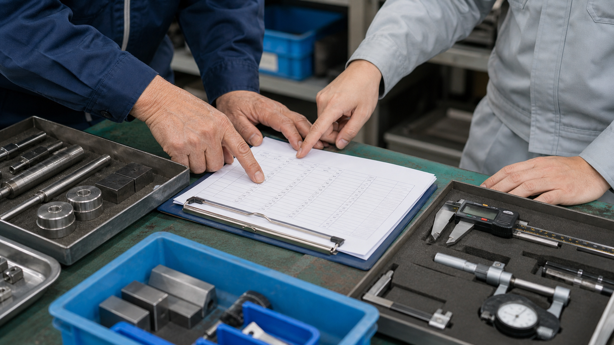
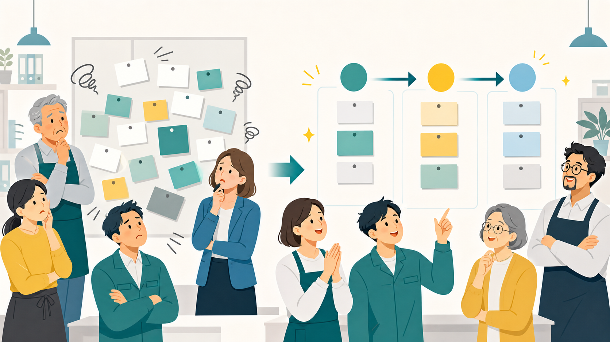

他社の改善事例 / 製造業・品質管理
検査後に散らばる不良写真を、翌朝の改善メモまで進めておく
検査写真、手書きメモ、ロット情報をAIが整理し、現場責任者が原因と対策を確認できる状態にするケースです。

先に結論
検査記録を残すだけで終わらせず、翌朝の改善に使える材料へ変えます。
検査で不良を見つけても、写真、手書きメモ、ロット、担当者コメントが散らばったままだと、翌朝の会議でまた一から確認になります。
改善後は、AIが不良写真とメモを種類別に整理し、発生箇所、傾向、未確認点、対策候補をまとめます。現場責任者は品質判断と再発防止に集中できます。
読みどころ
どこで詰まり、何を変え、何が楽になるのか。
現場で起きていたこと
画像フォルダ、紙メモ、検査表が分かれ、後で見返しにくくなっていました。この小さな探し物が積み重なると、担当者は本来見たい判断に入る前に疲れてしまいます。
変えたこと
AIには完成判断ではなく、不良写真の分類、手書きメモの要約、ロット・工程別の整理を任せます。人が見るべき例外や確認点を先に出し、作業をゼロから作る状態から確認できる状態へ寄せます。
改善後に残るもの
翌朝は資料作りではなく、原因と対策の話から始められます。戻った時間は、顧客対応、スタッフ教育、品質確認、次の営業活動など、人が直接価値を出す仕事へ戻せます。
改善後の実感
検査記録の整理を、作る時間から確認する時間へ寄せていきます。
写真が溜まる
検査後の写真とメモがフォルダに残るだけで、原因整理が後回しでした。
傾向が見える
AIが不良種別、ロット、工程、確認点をまとめます。
会議が早い
翌朝は資料作りではなく、原因と対策の話から始められます。
ある日のナラティブ
16時35分、検査台の横には不良写真が12枚残っていました。
若手担当者は、傷、寸法ずれ、打痕の写真を撮り、手書きメモを残しました。けれど終業前の現場では、整理する時間がありません。
以前は、翌朝に責任者が写真を開き直し、どの工程で何が起きたのかを一枚ずつ確認していました。会議の半分が資料探しで終わる日もありました。
改善後は、写真とメモをAIへ渡します。AIは不良種別、ロット、工程、再確認が必要な点を一覧にします。
責任者はAIの整理を見て、原因の仮説と対策を人の経験で判断します。若手には、どこを見ればよかったかを具体的に教えられます。
画像で見る改善ポイント
この仕事は、画面の中だけでなく現場の動き方が変わります。

仕事を小さく分ける
仕事を小さく分ける場面があると、改善後の働き方を読者が具体的に想像できます。
確認できる形にする
確認できる形にする場面があると、改善後の働き方を読者が具体的に想像できます。

戻った時間を使う
戻った時間を使う場面があると、改善後の働き方を読者が具体的に想像できます。
導入前
導入前は、検査記録の整理の材料があちこちに散らばっていました。
画像フォルダ、紙メモ、検査表が分かれ、後で見返しにくくなっていました。
その日の出荷対応に追われ、改善会議の準備が翌朝に残っていました。
ベテランの判断理由が言葉にならず、若手へ伝わりにくい状態でした。
仕事の流れ
AIに任せるのは、検査記録の整理の下準備までです。
現場で事実を集めます。
傷、寸法、色、工程などで分類します。
AIが曖昧な箇所を隠さず出します。
原因判断、出荷可否、再発防止は人が持ちます。
人とAIの分担
任せる仕事と、任せてはいけない判断を分けます。
AIに渡しやすい作業
- 不良写真の分類
- 手書きメモの要約
- ロット・工程別の整理
- 改善会議用メモの下書き
人が見るべき判断
- 品質判定と出荷判断
- 原因特定と対策決定
- 作業者への指導
- 顧客報告の最終確認